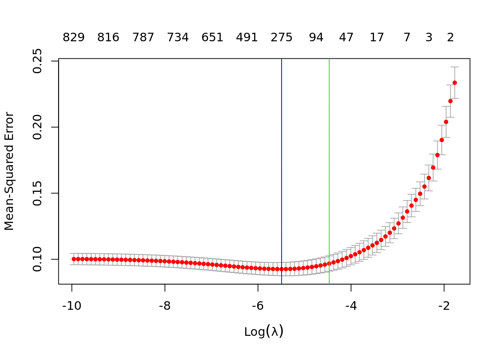
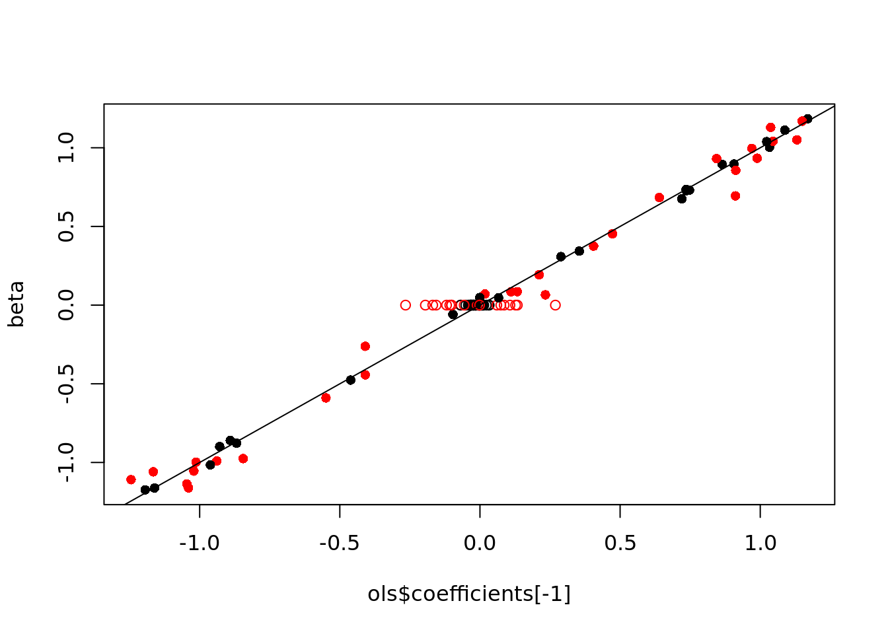

Chapter 5 Linear Model Selection
5.1 Regression requires more data than features
library(glmnet)import the dataset
df <- read.csv("Datasets/non_retweets_dc_inaug_steal.csv")Down-sampling for faster processing
samp_ind <- sample(nrow(df), 8000)
df <- df[samp_ind,]Combining the different flags
steal_index <- grep("steai", names(df))
names(df)[steal_index]## [1] "X.stopthesteai" "X.stopthesteai2020" "X.stopthesteai2021"df[, "X.stopthesteai2020"] <- (
df[, "X.stopthesteai2020"] +
df[, "X.stopthesteai"] +
df[, "X.stopthesteai2021"])
df <- df[, -grep("(X.stopthesteai$|X.stopthesteai2021$)", names(df))]Removing features that are not numeric
text <- df[, grep("tweet_body", names(df))]
df <- df[,-grep("(tweet_body|created_at)", names(df))]
names(df)[grep("_", names(df))]## [1] "X.washington_dc" "X.washington_dcprotest"
## [3] "X.washington_dcriot" "X.washington_dcwx"
## [5] "X.jim_jordan" "X.mike_p"
## [7] "X.washington_dc.1" "like_count"
## [9] "reply_count" "retweet_count"
## [11] "washington_dc"head(df$created_at)## NULLdf <- df[, sapply(df, class) == "numeric"]Fitting the model
y_ind <- grep("X.stopthesteai2020", names(df))
x <- as.matrix(df[, -y_ind])
x <- scale(x)
y <- as.numeric(df[, y_ind])
#bad_data <- which(is.na(x[, colnames(x) == "xinaugur"]))
bad_data <- which(is.na(x[, colnames(x) == "zone"]))
x <- x[-bad_data,]
y <- y[-bad_data]table(sapply(df,class))##
## numeric
## 835names(df)[sapply(df,class) == "character"]## character(0)sum(apply(x,2, function(x) mean(is.na(x) > 0)))## [1] 0Examine the data
head(x[,colnames(x)=="zone"])## 948 10785 13779 4594 14969 5407
## -0.05598926 -0.05598926 -0.05598926 -0.05598926 -0.05598926 -0.05598926tail(x[,colnames(x)=="zone"])## 11866 11289 5095 804 9381 6359
## -0.05598926 -0.05598926 -0.05598926 -0.05598926 -0.05598926 -0.05598926head(y)## [1] 0 0 0 0 1 0Run the model
ols <- lm(y ~ x)
ols_coeffs <- summary(ols)$coefficientsTo do data mining with p-values, do not treat them like probabilities, but you can use them as a metric to guide you.
length(ols$coefficients)## [1] 835p_ord <- order(ols_coeffs[, 4])
rownames(ols_coeffs)[head(p_ord, 10)]## [1] "(Intercept)" "xX.washington_dc"
## [3] "xinaugur" "xX.washington_dc.1"
## [5] "xX.electionintegr" "xX.maga"
## [7] "xX.realdonaldtrump" "xfraud"
## [9] "xX.trump2020tosaveamerica" "xX.maga2020"5.2 Lasso
lasso_cv <- cv.glmnet(x,
y,
alpha=1,
nfolds = 5,
intercept=TRUE)
plot(lasso_cv)
abline(v=log(lasso_cv$lambda.min),
col="blue")
abline(v=log(lasso_cv$lambda.1se),
col="green")
lasso.fits <- lasso_cv$glmnet.fit
lasso_cv$lambda[which.min(lasso_cv$cvm)]## [1] 0.004118487lasso_cv$lambda.min## [1] 0.004118487lambda_ind <- which.min(lasso_cv$cvm)
plot(
ols$coefficients[-1],
lasso_cv$glmnet.fit$beta[, lambda_ind],
xlab = "OLS Coeffs",
ylab = "LASSO Coeffs",
xlim = c(-.1, 0.1),
ylim = c(-.05, 0.05)
)
abline(h = 0)
abline(a = 0, b = 1)
lasso_coeffs <- lasso_cv$glmnet.fit$beta[, lambda_ind]
lasso_coeffs[abs(lasso_coeffs) > 0.05]## X.washington_dc X.washington_dc.1 inaugur
## -0.27870638 -0.06757916 -0.26022122hist(lasso_cv$glmnet.fit$beta[, lambda_ind])5.3 simulating collinearity + sparsity
sample_size <- 1000
p <- 100
useful_p <- 50
# number of corr features
collin_p <- 50
useful_ind <- sample(p, useful_p)
corr_ind <- sample(p, collin_p)
# independent variables
z <- rnorm(sample_size)
corrs <- rep(0, p)
corrs[corr_ind] <- runif(collin_p, 0.3, 0.9)
x <- sapply(corrs,
function(corr) corr * z + (1 - corr) * rnorm(sample_size))
noise <- rnorm(sample_size)
#first option: generate y according to z
#y <- 2 * z + noise
#second option create a beta that defaults to beta (useless) and for some unknown
#locations of beta, assign random useful coefficients.
beta <- rep(0, p)
beta[useful_ind] <- runif(useful_p, -1.2, 1.2)
#matrix multiplication to get Y: most beta is zero and then add noise on top
y <- x %*% beta + noise
ols <- lm(y ~ x)
ols_summ <- summary(ols)$coefficients
rownames(ols_summ)[ols_summ[,4] < 0.05]## [1] "x3" "x7" "x9" "x11" "x13" "x15" "x16" "x18" "x19" "x20"
## [11] "x22" "x23" "x27" "x28" "x31" "x35" "x39" "x41" "x42" "x44"
## [21] "x45" "x48" "x49" "x51" "x53" "x54" "x56" "x59" "x60" "x63"
## [31] "x65" "x66" "x67" "x71" "x72" "x74" "x75" "x78" "x79" "x80"
## [41] "x81" "x83" "x85" "x87" "x89" "x90" "x93" "x96" "x97" "x99"
## [51] "x100"length(rownames(ols_summ)[ols_summ[,4]<0.05])## [1] 51cols <- rep('black', p)
cols[corr_ind] <- "red"
pchs <- rep(1, p)
pchs[useful_ind] <- 16
plot(ols$coefficients[-1], beta,
pch=pchs, col=cols)
abline(a=0, b=1)
5.4 Demo on glmnet functionalities
library(glmnet)
lasso_cv <- cv.glmnet(cbind(x, y), y, alpha=1)
coef(lasso_cv)## 102 x 1 sparse Matrix of class "dgCMatrix"
## 1
## (Intercept) -0.003548851
## V1 .
## V2 .
## V3 .
## V4 .
## V5 .
## V6 .
## V7 .
## V8 .
## V9 .
## V10 .
## V11 .
## V12 .
## V13 .
## V14 .
## V15 .
## V16 .
## V17 .
## V18 .
## V19 .
## V20 .
## V21 .
## V22 .
## V23 .
## V24 .
## V25 .
## V26 .
## V27 .
## V28 .
## V29 .
## V30 .
## V31 .
## V32 .
## V33 .
## V34 .
## V35 .
## V36 .
## V37 .
## V38 .
## V39 .
## V40 .
## V41 .
## V42 .
## V43 .
## V44 .
## V45 .
## V46 .
## V47 .
## V48 .
## V49 .
## V50 .
## V51 .
## V52 .
## V53 .
## V54 .
## V55 .
## V56 .
## V57 .
## V58 .
## V59 .
## V60 .
## V61 .
## V62 .
## V63 .
## V64 .
## V65 .
## V66 .
## V67 .
## V68 .
## V69 .
## V70 .
## V71 .
## V72 .
## V73 .
## V74 .
## V75 .
## V76 .
## V77 .
## V78 .
## V79 .
## V80 .
## V81 .
## V82 .
## V83 .
## V84 .
## V85 .
## V86 .
## V87 .
## V88 .
## V89 .
## V90 .
## V91 .
## V92 .
## V93 .
## V94 .
## V95 .
## V96 .
## V97 .
## V98 .
## V99 .
## V100 .
## V101 0.970849469lasso_mod <- glmnet(x, y, alpha=1, lambda=lasso_cv$lambda.1se)
coef(lasso_mod)## 101 x 1 sparse Matrix of class "dgCMatrix"
## s0
## (Intercept) -0.01439717
## V1 .
## V2 .
## V3 0.63016054
## V4 .
## V5 .
## V6 .
## V7 -1.08611720
## V8 .
## V9 .
## V10 .
## V11 .
## V12 .
## V13 -0.78424070
## V14 .
## V15 1.00119944
## V16 -0.12560558
## V17 .
## V18 -0.43357503
## V19 .
## V20 -0.22167606
## V21 .
## V22 0.54286505
## V23 .
## V24 .
## V25 .
## V26 .
## V27 0.95492277
## V28 .
## V29 .
## V30 .
## V31 -0.02404034
## V32 .
## V33 .
## V34 .
## V35 0.21629061
## V36 .
## V37 .
## V38 .
## V39 .
## V40 .
## V41 -0.77218548
## V42 0.63466208
## V43 .
## V44 -0.33669665
## V45 -0.01385245
## V46 .
## V47 .
## V48 -0.72823984
## V49 0.12356610
## V50 .
## V51 .
## V52 .
## V53 .
## V54 .
## V55 .
## V56 0.60795498
## V57 .
## V58 .
## V59 .
## V60 0.95210946
## V61 .
## V62 .
## V63 0.73570502
## V64 .
## V65 -0.97188025
## V66 -0.67234579
## V67 .
## V68 .
## V69 .
## V70 .
## V71 .
## V72 .
## V73 .
## V74 .
## V75 0.92864619
## V76 .
## V77 .
## V78 0.62450119
## V79 0.75367468
## V80 -0.78590281
## V81 0.61632560
## V82 .
## V83 0.46600120
## V84 .
## V85 0.93391607
## V86 .
## V87 .
## V88 .
## V89 0.19659323
## V90 -0.92332183
## V91 .
## V92 .
## V93 .
## V94 .
## V95 .
## V96 0.43893157
## V97 .
## V98 .
## V99 .
## V100 -0.62323217sample_size <- 1000
p <- 100
useful_p <- 50
# number of corr features
collin_p <- 50
useful_ind <- sample(p, useful_p)
corr_ind <- sample(p, collin_p)
# independent variables
z <- rnorm(sample_size)
corrs <- rep(0, p)
corrs[corr_ind] <- runif(collin_p, 0.3, 0.9)
x <- sapply(corrs,
function(corr) corr * z + (1 - corr) * rnorm(sample_size))
noise <- rnorm(sample_size)
# y <- 2 * z + noise
beta <- rep(0, p)
beta[useful_ind] <- runif(useful_p, -1.2, 1.2)
y <- x %*% beta + noise
sim_num <- 100
beta_mse <- matrix(NA, ncol=3, nrow=sim_num)
z_coeffs <- matrix(NA, ncol=3, nrow=sim_num)
for(i in seq_len(sim_num)){
if(i %% 10 == 0){
print(i)
}
noise <- rnorm(sample_size)
# y <- 2 * z + noise
y <- x %*% beta + noise
ols <- lm(y ~ x)
lasso_cv <- cv.glmnet(x, y, alpha=1)
ridge_cv <- cv.glmnet(x, y, alpha=0)
beta_mse[i, 1] <- mean((beta - ols$coefficients[-1])^2)
beta_mse[i, 2] <- mean((beta - coef(lasso_cv)[-1])^2)
beta_mse[i, 3] <- mean((beta - coef(ridge_cv)[-1])^2)
}## [1] 10
## [1] 20
## [1] 30
## [1] 40
## [1] 50
## [1] 60
## [1] 70
## [1] 80
## [1] 90
## [1] 100boxplot(beta_mse)
abline(h=2)plot(lasso_cv)sim_num <- 100
z_coeffs <- matrix(NA, ncol=3, nrow=sim_num)
for(i in seq_len(sim_num)){
if(i %% 10 == 0){
print(i)
}
noise <- rnorm(sample_size)
y <- 2 * z + noise
#y <- x %*%
ols <- lm(y ~ x + z)
lasso_cv <- cv.glmnet(x, y, alpha=1)
ridge_cv <- cv.glmnet(x, y, alpha=0)
#z_coeffs[i, 1] <- tail(ols$coefficients, 1)
#z_coeffs[i, 2] <- tail(coef(lasso_cv), 1)[1, 1]
#z_coeffs[i, 3] <- tail(coef(ridge_cv), 1)[1, 1]
#if we aren't using z, maybe we should look at prediction accuracy
#you could also use y according to the beta value instead
#beta_mse[i,1] <- mean((beta - ols$coefficients[-1])^2) #drops the intercept term
}## [1] 10
## [1] 20
## [1] 30
## [1] 40
## [1] 50
## [1] 60
## [1] 70
## [1] 80
## [1] 90
## [1] 100#boxplot(z_coeffs)
#abline(h=2)5.5 Principal Component Analysis
Sparcity:
Inbalanced data:
5.5.1 Principle Component Analysis
hidden_p <- 5
observ_p <- 30
prob <- NULL # runif(hidden_p)
h2o <- sample(hidden_p, #hidden to observed
observ_p,
replace=TRUE,
prob=prob)
h2o <- sort(h2o)
sample_size <- 1000
hidden_z <- sapply(
seq_len(hidden_p),
function(x) rnorm(sample_size))
corrs <- runif(observ_p, 0.3, 0.8)
#create five groups of colinear stuff
observ_x <- mapply(
function(i, corr) {
hidden_z[, i] * corr + rnorm(sample_size) * (1 - corr) *100
},
h2o, corrs)
#observ_x is what you often see, but there is still hidden stuff
image(cor(observ_x))
#This looks weird to what we expect. It doesn't look like five groups
#if we sort instead it works
h2o <- sample(hidden_p, #hidden to observed
observ_p,
replace=TRUE,
prob=prob)
sample_size <- 1000
hidden_z <- sapply(
seq_len(hidden_p),
function(x) rnorm(sample_size))
#This effects how things are correlated!
corrs <- runif(observ_p, 0.3, 0.8)
#create five groups of colinear stuff
observ_x <- mapply(
function(i, corr) {
hidden_z[, i] * corr + rnorm(sample_size) * (1 - corr)
},
h2o, corrs)
#observ_x is what you often see, but there is still hidden stuff
image(cor(observ_x))
beta <- runif(hidden_p, -10, 10)
noise <- rnorm(sample_size, sd=10)
#hard to measure hidden forces!
#we can only measure x, but x is only correlated to hidden stuff
y <- hidden_z %*% beta + noise
df <- data.frame(y, observ_x)
#y depends on the hidden stuff not xMaybe there is a hidden gene inside of you that makes you sick. We cant (yet) measure that hidden gene. But we can measure symptoms and things like your heart rate. This should be correlated.
5.6 Typical machine learning approach
#training data set, first 800 points (80 percent)
train <- 1:800
ols <- lm(y ~ ., df, subset=train)
length(ols$residual) #correct length## [1] 800#predict on points we didn't use to train
ols_pred <- predict(ols, df[-train,])
#error: differrence between measured values against predict. Mean of this squared MSE!
mean((df$y[-train] - ols_pred)^2)## [1] 119.6959#run ols
#PCA TIME
#only input X, (feature matrix) into the PCA function
pr_out <- prcomp(observ_x, scale=FALSE)
#scale is used because Xs might not be in the same unit, so mean = 0, sd = 1
class(pr_out)## [1] "prcomp"#it has its own class
names(pr_out)## [1] "sdev" "rotation" "center" "scale" "x"#squared value of sdev is eigenvalue
eigen_val <- pr_out$sdev^2
#cumulative sum as a fraction of total eigenvalues
plot(cumsum(eigen_val) / sum(eigen_val))
abline(h=.9)#here after the 5th point, the slope tapers off! This is directly related to the hidden_p value at the beginning. It should help show you how many important hidden features there are.
#it is the percent of variabilitiy caputured by the first k components
#If you don't know what to choose, 90% variability is a good point
plot(pr_out$sdev)#Very similar, but not as interpretable as percent of variability.
#These steps is how k is chosen.
#K is the dimension of W. Data came n x p. We need to shrink it to k. If you don't have
#a clear cut, use 90%
#we don't want to keep all the variability because not all features provide useful
#information. Some of them are so colinear, they just add noise.
cutoff <- 5
#now we are looking at x
#only pull out first k columns
dim(pr_out$x)## [1] 1000 30dim(observ_x)## [1] 1000 30#these will be the same, but we choose a cutoff.
W <- pr_out$x[, 1:cutoff]
df_w <- data.frame(y, W)
#PCA doesn't have to be lm. It could be ridge or lasso too
#should be like the ols from above
pca <- lm(y ~ ., df_w, subset=train)
#same prediction
pca_pred <- predict(pca, df_w[-train,])
#prediction error
mean((df_w$y[-train] - pca_pred)^2)## [1] 112.9948#that was the classic view of PCA 5.7 What we would do in data mining
k <- 3
plot(pr_out$rotation[,k])
abline(h = 0)which(abs(pr_out$rotation[, k]) > 0.2)## [1] 9 10 11 12 18 23#what is the truth we should be comparing to?
pr_out <- prcomp(observ_x)
test_x <- scale(observ_x, scale = FALSE) %*%
pr_out$rotation
pr_out$x## PC1 PC2 PC3 PC4
## [1,] 0.2958470397 0.2611423484 -1.071159033 -0.007153724
## [2,] -2.0138562679 -0.7219724348 -0.706533223 0.926311897
## [3,] -0.6549906757 -0.4907270993 1.332960292 -3.025254335
## [4,] -0.5909699698 0.3291390501 -1.055727950 -0.437291336
## [5,] 2.2224722210 1.2652430223 1.121896123 0.529088169
## [6,] 3.0250596423 -0.4599698268 1.364695344 1.443923997
## [7,] 2.3763278984 1.9805418864 -0.093394314 1.321748902
## [8,] 1.6665349752 2.5995367230 -0.699635587 -1.532046172
## [9,] -1.2824345419 1.6125604575 -2.242392370 -0.538110360
## [10,] 1.6034029038 -2.3227010131 0.720323919 0.459272914
## [11,] 1.0754217585 -0.4515726590 -2.153096881 -0.317474533
## [12,] 3.8481670719 -2.5827833822 -0.367539127 -1.663281861
## [13,] -0.4905189438 2.4074224813 0.849042692 0.782136248
## [14,] 1.8612734930 -0.5087522776 2.157327121 3.883584410
## [15,] 2.7192364516 0.8816139210 -0.762231652 -0.801808909
## [16,] 1.2495982959 -0.9968587583 -2.050494652 -0.489441340
## [17,] 1.0199167160 -0.2347963188 -1.485991897 0.473296025
## [18,] -0.9439460077 0.6547271933 -1.019061107 0.066894049
## [19,] -0.6001873073 -0.0179643547 -0.489042692 1.975795629
## [20,] 3.0592526472 -3.1889557847 0.636991259 0.539916034
## [21,] -2.3248899357 0.0344096842 1.749412483 -1.052815229
## [22,] -0.0556518486 2.2821401096 2.476261819 0.289555907
## [23,] -1.2953332843 0.2957649234 -1.120083566 -0.240297074
## [24,] -1.1014204515 -0.1096159752 -1.739649770 0.897722914
## [25,] 1.4875319291 -2.8793583588 1.065102099 -1.217430996
## [26,] 3.8391758393 0.9780345502 -3.000042512 0.002165112
## [27,] -1.5446137716 -2.8553876072 1.519011173 0.295680720
## [28,] 2.0224678890 -0.2908957398 1.908730628 -2.214683224
## [29,] -2.0866977743 -0.1746113971 -2.221982330 -0.550148099
## [30,] 2.5454296346 -0.9814788662 0.450517166 0.311046353
## [31,] -4.2350725469 0.6159541789 -0.625512809 1.454519840
## [32,] 0.8727938183 1.7614366376 0.444435619 -0.540569488
## [33,] -2.5309186895 2.1383531641 -1.663333954 -0.433504532
## PC5 PC6 PC7 PC8 PC9
## [1,] 1.0995247959 -0.147144713 -1.180851744 -0.074582401 -0.802019736
## [2,] 2.3610468186 1.087102168 0.173123710 -0.945197361 -0.590679256
## [3,] -0.2175928853 0.222637953 0.644177546 1.170161445 -1.166104069
## [4,] -0.0847581451 0.200788139 0.122824928 0.206648570 -1.198853832
## [5,] -0.6343586016 -0.865231978 -1.117684817 0.007911455 1.117324210
## [6,] 0.2477126830 0.063727121 0.262519658 1.451928576 -0.649572209
## [7,] -2.1639479763 0.456530092 -0.160151549 -0.672605339 0.245833015
## [8,] -0.0925113145 -0.969462168 0.933274618 -0.935168162 -0.780909755
## [9,] 2.0082222719 -0.847405165 -0.097387348 0.187409394 -0.003273817
## [10,] -0.6455228162 -0.021543254 -0.239161676 0.148029761 -0.929989306
## [11,] 0.4033603820 0.316104861 -0.089731353 0.628684350 -0.621774840
## [12,] -1.0315126485 0.794384504 1.100558234 -0.287370455 0.212370607
## [13,] -0.0092621676 0.248083181 0.159419292 -0.165054886 -0.120875707
## [14,] -1.1674972738 -0.081458865 0.079293039 -0.153056623 0.514533785
## [15,] 0.7160194011 0.376530213 -0.646997222 0.362879079 0.214558053
## [16,] 0.4825273167 1.010691064 0.493837155 0.084917631 1.200065779
## [17,] 0.2895444387 0.308355158 0.239458418 0.411951169 0.881906776
## [18,] 1.0481751468 1.204655571 -0.093833024 0.569036788 0.346788657
## [19,] -0.9086402741 -0.392470176 1.725231102 0.087939735 -0.995121148
## [20,] -1.3363649167 -0.286251946 0.859263937 -0.702354554 -1.088810078
## [21,] -2.4154430991 -0.215738464 -0.417752356 -0.734856092 -0.175109717
## [22,] 1.4879908026 -0.716777626 0.087591090 -1.162863026 -0.592853233
## [23,] 0.4326879365 0.174419351 -0.097926979 -0.289393807 -0.767932393
## [24,] -0.9726118994 -1.642273300 -0.012621794 0.195615940 0.046731492
## [25,] 1.7765709497 -0.027346464 0.470427789 -0.858898917 0.301532176
## [26,] 0.1701717407 0.014859597 0.679047259 0.141523269 0.196945034
## [27,] 0.7293161921 -1.371961237 0.514614457 0.804733156 0.479063921
## [28,] 0.1947009748 -0.581981806 -0.608349726 -0.020611216 0.179308316
## [29,] -0.3315187544 1.138462342 0.786084954 -0.145309415 -0.136760586
## [30,] 1.5869389431 0.582620813 1.147743947 0.781396198 -0.129963738
## [31,] 0.4049502486 0.546011615 1.842000361 -1.174971151 0.550044635
## [32,] -0.0603608543 0.069342837 0.468662606 0.740440807 -0.950651509
## [33,] 1.3580095672 0.397281015 0.510861099 0.100025483 0.836885571
## PC10 PC11 PC12 PC13
## [1,] 0.5437753062 -0.7836365303 0.479929028 -0.1207723178
## [2,] 0.3589887545 0.9645661552 0.790479081 -0.4648002280
## [3,] -0.1830775549 -0.0545967588 0.262957140 -0.0217880234
## [4,] -0.2303124394 0.8385495851 1.034324001 0.1389010236
## [5,] -0.6995117253 0.3046488620 1.196728741 0.1049148465
## [6,] 0.1928991785 1.0301118179 0.510055356 -0.7755728459
## [7,] -1.1981059738 0.2153719959 -0.332123114 0.8757114313
## [8,] 0.1853046835 0.1659908777 -0.107726361 0.8455911908
## [9,] 0.1810606656 -0.2718652117 -0.212688706 0.2118349717
## [10,] -0.5324283318 -0.7048769326 0.506169023 -0.3788605877
## [11,] 0.8972704255 -0.5570703232 -0.510007769 0.4916853844
## [12,] -0.8130658332 0.2687734256 0.140669817 1.6133789109
## [13,] -0.2340058438 -1.4552936772 0.236187130 -0.2484726396
## [14,] 0.0894594596 -0.4141361624 -0.184453893 -0.4857055100
## [15,] 0.1376340707 -0.2895517796 -0.463272395 -0.0409899407
## [16,] 0.0231082647 -0.5551582455 -0.999857081 0.6350866319
## [17,] -1.3262984960 -0.5943385256 0.600277990 -0.4079729384
## [18,] 0.5122940368 0.5370254582 -0.692335397 -0.3770983366
## [19,] 0.9194310186 -0.0255871240 0.595308752 0.5117958049
## [20,] -0.5358289497 -0.2792705051 -0.063179833 0.2523130537
## [21,] 1.0053556165 0.2535445551 -0.735184555 -0.9193320562
## [22,] 0.1944381133 0.2776808447 0.211203585 -0.1621683158
## [23,] 0.3324961963 0.3569986698 -0.393384796 -0.3315612187
## [24,] -1.3871350320 0.3584947983 0.790696554 0.5411900977
## [25,] -0.2892667647 0.0836470788 0.622780249 0.5733184308
## [26,] -0.7200892783 -0.5760175412 -0.622057786 0.3871275953
## [27,] 0.5309551745 -0.0795048221 -0.405655090 0.8478445706
## [28,] 0.3300779570 0.7851538665 0.724615987 0.3814126611
## [29,] -0.0191360826 0.3651346392 -1.241753502 -0.0175665191
## [30,] 0.0095073126 0.0012017354 -0.452964804 0.0804336309
## [31,] -0.4975856341 -0.8506398138 -0.113818910 0.5972892284
## [32,] 0.5163256642 0.8667431992 0.340094774 -0.4436117041
## [33,] 0.5130287441 -0.5496685843 0.457655315 0.0440828457
## PC14 PC15 PC16 PC17
## [1,] -0.0732249020 -0.3341726487 -0.1736591970 0.195228889
## [2,] 0.3141231547 -1.2698536981 0.5224818750 -0.366895129
## [3,] -0.1381878808 0.3954531897 -0.3379899895 0.248537636
## [4,] 0.7227791303 -0.3017475056 -0.0787364138 0.592691715
## [5,] 0.7837603242 -0.2132845778 -0.4384072707 0.296723558
## [6,] -0.0970870333 -0.2625385613 0.1022708952 -0.214947584
## [7,] 0.1771400743 -0.5957476099 -0.0348920260 0.225925342
## [8,] -0.8808436255 0.4020156687 0.3279874792 -0.644656532
## [9,] 0.3013182618 -0.0277628402 -0.4254019569 0.923417652
## [10,] -0.5459264361 -0.0263919086 0.5732242213 0.557071184
## [11,] -0.2139186622 0.1488366527 0.2950739978 -0.143607228
## [12,] -0.7079434793 0.3291721026 0.9137059949 0.708320755
## [13,] 1.9425808090 0.5342853430 -0.3898080121 -0.240086472
## [14,] -0.1093244976 -0.4951920514 0.4054013786 -0.798711362
## [15,] 0.9104772788 -0.0533660494 0.7123560813 -0.669146760
## [16,] 0.6050876723 0.2818567040 0.0813391511 0.641508922
## [17,] -0.2090171141 0.8507579071 0.0754898982 0.292291173
## [18,] -0.0837622602 -0.7981763694 0.8634332939 -0.160390304
## [19,] -0.8525140025 -0.0873522241 -0.2248447253 -0.071489870
## [20,] -0.2218852388 -1.4939579089 0.6810839593 -0.233750092
## [21,] 0.6180441980 0.0212572745 0.7337763877 0.148385426
## [22,] -0.0435958377 0.2633830330 -0.0144362839 0.527240760
## [23,] 0.2097677948 -0.0773029518 0.0993118155 0.160158771
## [24,] 0.6666926782 -0.1303859171 0.0252092124 0.318845229
## [25,] -0.7593072242 -0.1249911798 0.4213187670 -0.631426174
## [26,] 0.8851644906 0.6168583361 -0.6330944595 0.086128321
## [27,] -0.0576437056 1.0841517758 -0.4170187378 -0.068089433
## [28,] -0.4612284737 -0.1208346482 0.0287091855 0.415327939
## [29,] 0.7953232890 -0.1726967368 -0.2597175115 0.204668002
## [30,] 0.2042662293 -0.1848225916 -0.0304071218 1.236353251
## [31,] -0.7107423821 0.0194933612 -0.1388226110 -0.810265056
## [32,] 0.4200354354 -0.0664945650 0.3908555006 -0.208419797
## [33,] 0.7008433865 -0.3396164389 0.0180039917 -0.161364387
## PC18 PC19 PC20 PC21
## [1,] -0.4457362998 -4.610898e-03 -0.3078095779 0.0567392690
## [2,] 1.0623718695 2.394451e-01 -0.5419162707 0.0252904680
## [3,] -0.3067765693 -8.363524e-01 -0.5137208486 0.7112323765
## [4,] -0.5189273868 -2.831232e-01 -0.2970294983 0.0167863953
## [5,] 0.0383086229 3.050548e-01 0.1471425499 0.2627195701
## [6,] 0.5982278717 1.536050e-02 -0.2604623636 0.3735616464
## [7,] -0.1722642138 -1.079683e-01 -0.0901655537 -0.4508707308
## [8,] -0.2884316074 9.226981e-02 -0.3744217280 0.2116295423
## [9,] 0.9590343644 -4.152394e-01 -0.4418130496 0.3572943340
## [10,] -1.3743018319 -5.672359e-01 0.1703548477 0.5826451206
## [11,] -0.0586535632 -1.584388e-01 -0.2573719310 0.3145838663
## [12,] 0.4138072560 -6.354171e-03 -0.0653126409 -0.2961914198
## [13,] -0.3887540678 -2.881583e-01 -0.1549914943 -0.0973805181
## [14,] 0.5133369117 4.935584e-01 0.2332614161 -0.0920206743
## [15,] -0.0923178417 -3.017579e-01 0.0142772904 -0.4547184227
## [16,] -0.3980090612 -1.004798e+00 0.7188059120 0.2251581876
## [17,] -0.1853727025 5.534440e-03 -0.9049086228 0.6472282607
## [18,] 0.0854285794 1.691068e-02 -0.0222811642 -0.1372681318
## [19,] -0.6467037011 -2.435339e-01 -0.3253871862 0.1532740368
## [20,] 0.6021908092 -6.513660e-03 0.3295586789 0.1367615005
## [21,] 0.6521123203 3.240441e-01 -0.4126279464 -0.0291903475
## [22,] -0.6938800078 -4.358869e-01 -0.4446220795 0.6612315056
## [23,] -0.7163442651 -7.624555e-01 0.2544034601 -0.2122467115
## [24,] 0.6416486533 5.465534e-02 0.0671909292 -0.2081305313
## [25,] 0.3982146017 -1.844816e-01 -0.3252947242 -0.1375141304
## [26,] 0.2706568234 -2.148996e-01 0.3156424496 -0.0494205681
## [27,] -0.3984291822 1.807186e-01 -0.1885632787 0.0563889946
## [28,] 0.5846515831 4.146499e-01 -0.2063168490 -0.6101147468
## [29,] -0.2174321481 1.830913e-01 0.1152205038 0.3558752394
## [30,] -1.2091442616 1.591550e-01 0.9012578149 -0.1150265417
## [31,] -0.4493938904 1.912519e-01 -0.7645219151 0.5501554066
## [32,] -0.1879901096 9.848562e-02 -0.3726156410 -0.0647924155
## [33,] -0.9246690449 -4.696714e-01 -0.2444761648 -0.4401670316
## PC22 PC23 PC24 PC25
## [1,] -0.1022262860 -0.4039494655 -0.1692943919 -0.2327569431
## [2,] -0.1199018532 0.0910462796 -0.4309741375 0.1818830285
## [3,] 0.3557925548 -0.1157418332 0.0066484161 -0.0609868308
## [4,] 0.4037655371 -0.2937421229 0.5956675582 0.6184004458
## [5,] 0.1920809998 -0.2435180441 0.0371462705 0.0783549323
## [6,] 0.3379655674 -0.1189286702 -0.1527143875 0.1107891023
## [7,] 0.0618041706 0.0650182349 -0.2698727614 0.3220275404
## [8,] -0.7358617121 -0.2490370211 -0.0492927494 0.0379738561
## [9,] 0.4898837405 0.2860307789 0.5197192455 0.1821374875
## [10,] -0.3747236631 0.2737925154 -0.1457765256 -0.0761614738
## [11,] 0.3045892813 -0.0106082111 0.0201590112 -0.2693763165
## [12,] 0.4465555980 0.7193906074 -0.2240837255 0.4639174892
## [13,] -0.3067994486 -0.0979824992 0.5234244422 0.0820906609
## [14,] -0.1739564430 0.4620908812 0.0723671860 -0.3522738715
## [15,] 0.4216238175 0.3448204159 0.1519083876 -0.1617391120
## [16,] 0.2482746276 0.1079170266 0.4646898431 -0.1512874293
## [17,] -0.1602625209 0.2035741060 -0.5212603846 0.1126290423
## [18,] -0.3619861096 0.3013196388 0.2377771248 0.1614614799
## [19,] 0.6620320507 -0.2108095905 0.5913446695 -0.3189067650
## [20,] 0.1122745377 -0.5038516870 -0.5657149283 0.1540179723
## [21,] -0.0214711177 -0.5312467435 0.4543741280 0.2851634035
## [22,] -0.2065743543 -0.0678946429 1.0608725232 -0.2652483161
## [23,] 0.2842588782 -0.0976900752 0.2230457026 0.1015550942
## [24,] 1.3341292315 -0.1522970625 0.0289499791 -0.2840327658
## [25,] -0.3808818744 0.0989535406 0.2859288355 -0.3229577921
## [26,] -0.2743774473 0.1373698712 0.1890767696 -0.1756523570
## [27,] 0.3367836460 -0.3059694979 0.0487319559 -0.3087622269
## [28,] 0.1405259746 0.1308026626 0.0831442113 0.1518874402
## [29,] -0.1728043393 0.2837101844 -0.2930413498 0.0193721313
## [30,] -0.1374709722 -0.0046887700 -0.1947329030 0.2528368483
## [31,] -0.5339533269 0.0931337415 -0.0822783663 0.0353525931
## [32,] -0.4106987626 0.8819906001 -0.0852000278 0.1837462198
## [33,] 0.5796956977 -0.0645787657 -0.5812702762 0.2082504213
## PC26 PC27 PC28 PC29
## [1,] 1.117182e-01 -0.0966398520 0.4062097213 -7.211986e-01
## [2,] -2.096347e-01 -0.4622280886 -0.0658737553 2.531054e-01
## [3,] 3.002085e-01 -0.4337991652 0.3898869000 -2.687600e-02
## [4,] 5.212339e-02 0.0163771004 -0.0414428429 1.646972e-01
## [5,] 4.663576e-01 0.1843364315 0.0653079416 6.418099e-01
## [6,] -2.126372e-02 -0.5292169127 0.0058714135 2.355877e-01
## [7,] -2.797377e-01 -0.5616969959 0.3251031782 8.222250e-02
## [8,] 3.917575e-01 0.1282764588 0.0277771364 -5.488517e-02
## [9,] 2.960875e-01 0.0909223271 -0.0418896913 -1.665574e-01
## [10,] 4.808022e-02 -0.2501098587 0.1687259366 -3.024521e-01
## [11,] 3.315518e-01 0.0905121583 -0.0793419448 2.330636e-01
## [12,] -9.395867e-02 -0.0619012622 -0.1003209908 -1.520693e-01
## [13,] 2.134890e-01 -0.0470469660 -0.1568496043 2.092588e-01
## [14,] 3.041331e-01 -0.0523779949 0.2209801191 -8.432698e-02
## [15,] -4.721887e-01 0.4394827764 0.2771020418 2.314449e-02
## [16,] 1.237427e-01 0.3437209357 -0.1938359505 -4.176686e-01
## [17,] 4.324378e-02 -0.0585738072 -0.0079965896 4.320782e-01
## [18,] 3.529554e-01 -0.0442805679 -0.4512113406 4.674863e-01
## [19,] -3.470305e-02 -0.6317995371 0.3083612497 4.691560e-02
## [20,] -6.335135e-01 0.2186552463 -0.2121070885 -4.519681e-02
## [21,] -4.418800e-01 0.3512383251 0.0700632261 -6.633488e-02
## [22,] 1.174937e-01 -0.0594580593 0.4233378201 2.547439e-01
## [23,] -4.949624e-01 -0.4861072549 -0.0280564887 -1.329513e-01
## [24,] 9.079160e-01 -0.1049299671 0.0993153961 1.903818e-01
## [25,] -1.747998e-01 0.0888860546 -0.1294135551 3.046653e-01
## [26,] -2.495438e-01 -0.3363519929 0.2262295608 -8.065229e-02
## [27,] -4.716494e-02 -0.0408740928 0.1714566433 5.669629e-01
## [28,] 4.239210e-02 -0.0004691487 -0.1780362726 2.769507e-02
## [29,] -1.053177e-01 -0.3873306208 -0.2118740263 4.134341e-01
## [30,] 8.545713e-02 -0.1201782678 0.0189254708 -4.238918e-02
## [31,] -2.548485e-02 -0.3277920997 -0.0459242740 7.320668e-03
## [32,] 1.363273e-02 -0.3845378708 -0.1249983326 -2.336636e-01
## [33,] -3.773702e-01 -0.0628420943 -0.3331347868 -2.283481e-01
## PC30
## [1,] 0.0491771413
## [2,] 0.2116874274
## [3,] -0.5143813232
## [4,] -0.5663522785
## [5,] -0.6988054010
## [6,] -0.3203439680
## [7,] -0.0175446142
## [8,] 0.0381789506
## [9,] -0.0886259298
## [10,] 0.0714796465
## [11,] -0.1306303029
## [12,] 0.1058736578
## [13,] 0.1047178822
## [14,] 0.2364788566
## [15,] 0.2542225801
## [16,] -0.4997859068
## [17,] -0.3043303828
## [18,] 0.0619361304
## [19,] 0.1081317608
## [20,] -0.2557260229
## [21,] -0.1598611451
## [22,] 0.4733555374
## [23,] -0.2725161035
## [24,] 0.2820923752
## [25,] -0.2062812163
## [26,] 0.1905601545
## [27,] -0.0080134804
## [28,] -0.1107170680
## [29,] -0.1305718337
## [30,] -0.2856534832
## [31,] 0.6217773955
## [32,] 0.4442087210
## [33,] 0.0789279593
## [ reached getOption("max.print") -- omitted 967 rows ]#Now looking at rotation
head(observ_x, 1 ) %*% pr_out$rotation[,1]## [,1]
## [1,] 0.3558461#k is which column are we going to examine
j <- 2
plot(pr_out$rotation[, j])
abline(h = 0)which(abs(pr_out$rotation[, j]) > 0.2)## [1] 3 4 7 9 11 12 16 17 18 23# what is the truth we should be comparing to?
#What is rotation. Matrix (30 x 30 in this case)
dim(pr_out$rotation)## [1] 30 30#it is actually p x p rather than p x k to give you more columns
head(pr_out$rotation[,k])## [1] -0.012959590 0.125699214 -0.135540402 -0.152606801 -0.018739123
## [6] -0.009272309#kth eigenvector which correspods with the kth largest value (most significant) value
#this will always be 1. Property of rotation matrix
sum(pr_out$rotation[,k]^2)## [1] 15.8 Principal Component Analysis Applied!
5.8.1 Other example
In really poor countries it is super hard to measure wealth and income. There are no reciepts and corresponding taxes. People dont have bank accounts. Instead, you measure features. Like do you have a fridge. Do you have cooking equipment? How many kids? How many room in your house?
So you could run PCA on assets matrix. You can find correlations. If you have more rooms in your house, you likely have more education. The correlations will be baked into the principal driving component. Further, they use this as the Y to see if they can predict! But that is beyond the scope of this class.
library(jsonlite)
#citation count between his 15 papers and those he sighted
citations <- read.csv("Datasets/j_cunningham_citation.csv", head = FALSE)
titles <- read_json("Datasets/j_cunningham_citation_titles.json")5.8.2 Explore the data
dim(citations)## [1] 15 754head(citations)## V1 V2 V3 V4 V5 V6 V7 V8 V9 V10 V11 V12 V13 V14 V15 V16 V17 V18 V19 V20
## 1 0 0 0 0 0 0 0 0 0 0 0 0 0 0 0 0 0 0 0 0
## V21 V22 V23 V24 V25 V26 V27 V28 V29 V30 V31 V32 V33 V34 V35 V36 V37 V38
## 1 0 0 0 0 0 0 0 0 0 0 0 0 0 0 0 0 0 0
## V39 V40 V41 V42 V43 V44 V45 V46 V47 V48 V49 V50 V51 V52 V53 V54 V55 V56
## 1 1 0 0 0 0 0 0 0 0 0 0 0 0 0 0 0 0 0
## V57 V58 V59 V60 V61 V62 V63 V64 V65 V66 V67 V68 V69 V70 V71 V72 V73 V74
## 1 0 0 0 0 0 0 0 0 0 0 0 0 0 0 0 0 0 0
## V75 V76 V77 V78 V79 V80 V81 V82 V83 V84 V85 V86 V87 V88 V89 V90 V91 V92
## 1 0 0 0 0 0 0 0 0 0 0 0 0 0 0 0 0 0 0
## V93 V94 V95 V96 V97 V98 V99 V100 V101 V102 V103 V104 V105 V106 V107
## 1 0 0 0 0 0 0 0 0 0 0 0 0 0 0 0
## V108 V109 V110 V111 V112 V113 V114 V115 V116 V117 V118 V119 V120 V121
## 1 0 0 0 0 0 0 0 0 0 0 0 0 0 0
## V122 V123 V124 V125 V126 V127 V128 V129 V130 V131 V132 V133 V134 V135
## 1 0 0 0 0 0 0 0 0 0 0 0 0 0 1
## V136 V137 V138 V139 V140 V141 V142 V143 V144 V145 V146 V147 V148 V149
## 1 1 1 0 1 7 3 0 0 2 2 3 0 2 3
## V150 V151 V152 V153 V154 V155 V156 V157 V158 V159 V160 V161 V162 V163
## 1 0 3 0 3 3 8 0 0 3 2 6 0 0 0
## V164 V165 V166 V167 V168 V169 V170 V171 V172 V173 V174 V175 V176 V177
## 1 4 1 0 1 0 0 1 1 0 0 1 0 1 2
## V178 V179 V180 V181 V182 V183 V184 V185 V186 V187 V188 V189 V190 V191
## 1 0 0 1 0 1 0 0 1 4 0 1 0 0 1
## V192 V193 V194 V195 V196 V197 V198 V199 V200 V201 V202 V203 V204 V205
## 1 2 0 0 1 2 0 2 0 0 1 1 0 0 2
## V206 V207 V208 V209 V210 V211 V212 V213 V214 V215 V216 V217 V218 V219
## 1 1 0 3 0 1 1 0 0 3 0 2 3 0 0
## V220 V221 V222 V223 V224 V225 V226 V227 V228 V229 V230 V231 V232 V233
## 1 2 0 0 1 0 0 1 0 0 1 0 1 1 0
## V234 V235 V236 V237 V238 V239 V240 V241 V242 V243 V244 V245 V246 V247
## 1 1 1 0 1 0 1 1 0 1 1 0 0 0 0
## V248 V249 V250 V251 V252 V253 V254 V255 V256 V257 V258 V259 V260 V261
## 1 1 0 1 1 0 0 0 0 1 0 1 0 0 0
## V262 V263 V264 V265 V266 V267 V268 V269 V270 V271 V272 V273 V274 V275
## 1 1 0 1 0 0 0 0 1 1 0 0 0 0 1
## V276 V277 V278 V279 V280 V281 V282 V283 V284 V285 V286 V287 V288 V289
## 1 1 0 1 0 0 0 1 0 2 0 1 0 1 0
## V290 V291 V292 V293 V294 V295 V296 V297 V298 V299 V300 V301 V302 V303
## 1 2 1 1 1 0 1 0 1 0 0 0 1 1 1
## V304 V305 V306 V307 V308 V309 V310 V311 V312 V313 V314 V315 V316 V317
## 1 0 1 0 0 1 0 1 0 1 0 0 0 0 0
## V318 V319 V320 V321 V322 V323 V324 V325 V326 V327 V328 V329 V330 V331
## 1 0 0 0 0 0 0 0 0 0 0 0 0 0 0
## V332 V333 V334 V335 V336 V337 V338 V339 V340 V341 V342 V343 V344 V345
## 1 0 0 0 0 0 0 0 0 0 0 0 0 0 0
## V346 V347 V348 V349 V350 V351 V352 V353 V354 V355 V356 V357 V358 V359
## 1 0 0 0 0 0 0 0 0 0 0 0 0 0 0
## V360 V361 V362 V363 V364 V365 V366 V367 V368 V369 V370 V371 V372 V373
## 1 0 0 0 0 0 0 0 0 0 0 0 0 0 0
## V374 V375 V376 V377 V378 V379 V380 V381 V382 V383 V384 V385 V386 V387
## 1 0 0 0 0 0 0 0 0 0 0 0 0 0 0
## V388 V389 V390 V391 V392 V393 V394 V395 V396 V397 V398 V399 V400 V401
## 1 0 0 0 0 0 0 0 0 0 0 0 0 0 0
## V402 V403 V404 V405 V406 V407 V408 V409 V410 V411 V412 V413 V414 V415
## 1 0 0 0 0 0 0 0 0 0 0 0 0 0 0
## V416 V417 V418 V419 V420 V421 V422 V423 V424 V425 V426 V427 V428 V429
## 1 0 0 0 0 5 0 0 0 0 0 0 0 5 0
## V430 V431 V432 V433 V434 V435 V436 V437 V438 V439 V440 V441 V442 V443
## 1 0 0 0 0 0 0 0 0 0 0 0 0 0 0
## V444 V445 V446 V447 V448 V449 V450 V451 V452 V453 V454 V455 V456 V457
## 1 0 0 0 0 0 0 0 0 0 0 0 0 0 0
## V458 V459 V460 V461 V462 V463 V464 V465 V466 V467 V468 V469 V470 V471
## 1 0 0 0 0 0 0 0 0 0 0 0 0 0 0
## V472 V473 V474 V475 V476 V477 V478 V479 V480 V481 V482 V483 V484 V485
## 1 0 0 0 0 0 0 0 0 0 0 0 0 0 0
## V486 V487 V488 V489 V490 V491 V492 V493 V494 V495 V496 V497 V498 V499
## 1 0 0 0 0 0 0 0 0 0 0 0 0 0 0
## V500 V501 V502 V503 V504 V505 V506 V507 V508 V509 V510 V511 V512 V513
## 1 0 0 0 0 0 0 0 0 0 0 0 0 0 0
## V514 V515 V516 V517 V518 V519 V520 V521 V522 V523 V524 V525 V526 V527
## 1 0 0 0 0 0 0 0 0 0 0 0 0 0 0
## V528 V529 V530 V531 V532 V533 V534 V535 V536 V537 V538 V539 V540 V541
## 1 0 0 0 0 0 0 0 0 0 0 0 0 0 0
## V542 V543 V544 V545 V546 V547 V548 V549 V550 V551 V552 V553 V554 V555
## 1 0 0 0 0 0 0 0 0 0 0 0 0 0 0
## V556 V557 V558 V559 V560 V561 V562 V563 V564 V565 V566 V567 V568 V569
## 1 0 0 0 0 0 0 3 0 0 0 0 0 0 0
## V570 V571 V572 V573 V574 V575 V576 V577 V578 V579 V580 V581 V582 V583
## 1 0 0 0 0 0 0 0 0 0 0 0 0 0 0
## V584 V585 V586 V587 V588 V589 V590 V591 V592 V593 V594 V595 V596 V597
## 1 0 0 0 0 0 0 0 0 0 0 0 0 0 0
## V598 V599 V600 V601 V602 V603 V604 V605 V606 V607 V608 V609 V610 V611
## 1 0 0 0 0 0 0 0 0 0 0 0 0 0 0
## V612 V613 V614 V615 V616 V617 V618 V619 V620 V621 V622 V623 V624 V625
## 1 0 0 0 0 0 0 0 0 0 0 0 0 0 0
## V626 V627 V628 V629 V630 V631 V632 V633 V634 V635 V636 V637 V638 V639
## 1 0 0 0 0 0 0 0 0 0 0 0 0 0 0
## V640 V641 V642 V643 V644 V645 V646 V647 V648 V649 V650 V651 V652 V653
## 1 0 0 0 0 0 0 1 0 0 0 0 0 0 0
## V654 V655 V656 V657 V658 V659 V660 V661 V662 V663 V664 V665 V666 V667
## 1 0 0 0 0 0 0 0 0 0 0 0 0 0 0
## V668 V669 V670 V671 V672 V673 V674 V675 V676 V677 V678 V679 V680 V681
## 1 0 0 0 0 0 0 0 0 0 0 0 0 0 0
## V682 V683 V684 V685 V686 V687 V688 V689 V690 V691 V692 V693 V694 V695
## 1 0 0 0 0 0 0 0 0 0 0 0 0 0 0
## V696 V697 V698 V699 V700 V701 V702 V703 V704 V705 V706 V707 V708 V709
## 1 0 0 0 0 0 0 0 0 0 0 0 0 0 0
## V710 V711 V712 V713 V714 V715 V716 V717 V718 V719 V720 V721 V722 V723
## 1 0 0 0 0 0 0 0 0 0 0 0 0 0 0
## V724 V725 V726 V727 V728 V729 V730 V731 V732 V733 V734 V735 V736 V737
## 1 0 0 0 0 0 0 0 0 0 0 0 0 0 0
## V738 V739 V740 V741 V742 V743 V744 V745 V746 V747 V748 V749 V750 V751
## 1 0 0 0 0 0 0 0 0 0 0 0 0 0 0
## V752 V753 V754
## 1 0 0 0
## [ reached 'max' / getOption("max.print") -- omitted 5 rows ]citations[1:5,1:5]## V1 V2 V3 V4 V5
## 1 0 0 0 0 0
## 2 0 0 0 0 0
## 3 0 0 0 0 0
## 4 0 0 0 0 0
## 5 0 0 0 0 0max(citations)## [1] 14#across all paers
apply(citations, 1, max)## [1] 8 7 14 5 5 8 6 8 11 5 3 5 11 3 4names(titles)## [1] "auth_titles" "ref_titles"Papers that he has written:
head(titles[["auth_titles"]],3)## [[1]]
## [1] "Value and choice as separable, stable representations in orbitofrontal cortex"
##
## [[2]]
## [1] "Calibrating deep convolutional gaussian processes"
##
## [[3]]
## [1] "Neural trajectories in the supplementary motor area and motor cortex exhibit distinct geometries, compatible with different classes of computation"Papers he has cited
head(titles[["ref_titles"]],3)## [[1]]
## [1] "On improved estimation of normal precision matrix and discriminant coefficients"
##
## [[2]]
## [1] "Snakemake--a scalable bioinformatics workflow engine"
##
## [[3]]
## [1] "Bayesian source localization with the multivariate laplace prior"Among the 15, there are four papers that reference the 2 most popular articles. Let us find them:
ref_count <- apply(citations, 2, function(x)
sum(x > 0))
targets <- tail(names(sort(ref_count)),2)
#These are the two columns we want
target_ind <- which(names(citations) %in% targets)
target_ind## [1] 186 428titles[["ref_titles"]][target_ind]## [[1]]
## [1] "A category-free neural population supports evolving demands during decision-making"
##
## [[2]]
## [1] "Reorganization between preparatory and movement population responses in motor cortex"Explore this data: we know the index of the two. This can show the correlation between the two, meaning the papers are cited by certain papers. This would make sense. If you cite one of these, you almost certainly have to cite the other:
citations[,target_ind]## V186 V428
## 1 4 5
## 2 0 0
## 3 1 1
## 4 0 0
## 5 0 0
## 6 0 0
## 7 0 0
## 8 0 0
## 9 3 1
## 10 0 0
## 11 0 0
## 12 0 0
## 13 0 0
## 14 0 0
## 15 2 1A few things to remember. Longer papers should have more citations. There is also likely to be correlation between certain papers.
We would intuitively just want to apply our prcomp, like we learned in last class.
pr_out <- prcomp(citations)
plot(pr_out$sdev, main="")
This plot is not very appealing. There is not a significant drop until the last term. Maybe between 1 and 2 and 3 and 4, but not a big drop. And if you only abandon 1 dimension, (14 instead of 15), you arent really saving a lot.
5.8.2.1 Try standardizing the citation matrix in different ways
5.8.2.1.1 Usual standardization, i.e.make each feature mean=0 and sd = 1
norm_citation <- apply(citations, 2 , scale)
#also
pr_out <- prcomp(norm_citation)
plot(pr_out$sdev, main="")
png("Datasets/loadings_normal_standardization.png", 900, 700)
par(mfrow=c(4, 3))
for(i in seq_len(ncol(pr_out$rotation[,1:12]))){
eigenvec <- pr_out$rotation[, i]
plot(eigenvec, main = paste("Eigenvec",i))
abline(h=0)
}
dev.off()## png
## 2Plots using normal standardization
Remember from the plot, if we square all the values and add them together they will equal one. So strong deviations will be papers that are relied on (by index). Too many papers that share the same weight, might not be helpful. We believe there are only a few really good papers that we want. Not like 50. So this behavior is still undesirable.
This is bad! You subtract something away from 0 values. But we like 0s because they dont affect the objective function. PCA is using the frebenious norm where everything squared and added together is 1. So we like 0s. So how can we scale differently, but while keeping the 0s.
5.8.2.1.2 Max normalized, i.e.make each feature min=0, max = 1
#lets divide by the max, then everything is between 0 and one
norm_citation <- apply(citations, 2,
function(x) x / max(x))
pr_out <- prcomp(norm_citation, center=FALSE,
scale=FALSE)
png("Datasets/max_normalized.png", 900, 700)
par(mfrow=c(4, 3))
for(i in seq_len(ncol(pr_out$rotation[,1:12]))){
eigenvec <- pr_out$rotation[, i]
plot(eigenvec, main = paste("Eigenvec",i))
abline(h=0)
}
#dev.off()This should look much nicer. For example, Eigvec 4 looks better. Why did we normalize the columns? We often do this because the columns have different units. However, in this, the columns all have the same units. Instead, papers have different lengths, so the citation number can be affected by the length of the paper. So whay do we want to actually normalize? The rows!
5.8.2.1.3 Max normalized per paper, i.e.make each ROW min=0, max = 1
citations_norm_papers <- apply(citations, 1,
function(x) x / max(x))
# Just doing the above actually swapped things! We have 15 columns instead
#It processes a row, and then stacks it as a column. So we need to transpose
citations_norm_papers <- t(citations_norm_papers)
pr_out <- prcomp(citations_norm_papers)
plot(pr_out$sdev, main="")
png("Datasets/loadings_norm_per_paper.png", 900, 700)
par(mfrow=c(4, 3))
for(i in seq_len(ncol(pr_out$rotation[,1:12]))){
eigenvec <- pr_out$rotation[, i]
plot(eigenvec)
abline(h=0)
}
#dev.off()Ther is a much more noticable drop between 11 and 12
pr_out <- prcomp(citations)
plot(pr_out$sdev, main="")
png("Datasets/loadings.png", 900, 700)
par(mfrow=c(4, 3))
for(i in seq_len(ncol(pr_out$rotation[,1:12]))){
eigenvec <- pr_out$rotation[, i]
plot(eigenvec)
abline(h=0)
}
#dev.off()
target_ind <- which(abs(pr_out$rotation[, 2]) > 0.15)
titles[["ref_titles"]][target_ind]## [[1]]
## [1] "Motor cortex embeds muscle-like commands in an untangled population response"
##
## [[2]]
## [1] "Flexible sensorimotor computations through rapid reconfiguration of cortical dynamics"
##
## [[3]]
## [1] "Neuronal activity in the supplementary and presupplementary motor areas for temporal organization of multiple movements"
##
## [[4]]
## [1] "Role for supplementary motor area cells in planning several movements ahead"
##
## [[5]]
## [1] "The role of human primary motor cortex in the production of skilled finger sequences"1st column second row is
2nd column 3rd row is a disaster.
5.9 PCA on weather data example
- Wrap up the citation problem
- Play with weather data, tmax, celsius
df <- read.csv("Datasets/ushcn.csv")
station <- read.csv("Datasets/station_metadata.csv")
rownames(station) <- station$id
meta_sort <- station[names(df)[-1], c("longitude", "latitude")]
prop_na <- apply(df[, -1], 1,
function(x) mean(is.na(x)))
sdf <- df[prop_na < 0.1, ]
sdf_sans_na <- apply(sdf[, -1], 2, function(x){
x[is.na(x)] <- mean(x, na.rm=TRUE)
return(x)
})
library(RColorBrewer)
cols <- brewer.pal(7, "RdYlBu")
pr_out <- prcomp(sdf_sans_na)
png("Pictures/no_norm_pca.png", 600, 800)
par(mfrow=c(2, 1))
for(i in 1:2){
eigvec <- pr_out$rotation[, i]
breaks <- seq(min(eigvec), max(eigvec), length.out=length(cols)+1)
col_factors <- cut(eigvec, breaks=breaks)
plot(meta_sort$longitude,
meta_sort$latitude,
col=cols[col_factors],
pch=16, cex=0.5)
legend("bottomright",
legend = levels(col_factors),
fill=cols)
}
#dev.off()
Eigenvector 1 and two mapped
The two are telling in very different ways. The first shows the relationships of the coasts. The second shows east versus west. This is with default normalization: centering, but not scaling.
5.10 Different noramlizations
Run PCA with 3 different types of normalization on the maximum temperature data, then plot the maps of the loading values corresponding to the first 2 eigenvectors.
- No normalization, i.e.no centering and no scaling
- Centering but no scaling
- Centering and scaling
Write out what do you observe.
5.10.1 No normalization
prop_na <- apply(df[, -1], 1,
function(x) mean(is.na(x)))
sdf <- df[prop_na < 0.1, ]
sdf_sans_na <- apply(sdf[, -1], 2, function(x){
x[is.na(x)] <- mean(x, na.rm=TRUE)
return(x)
})
cols <- brewer.pal(7, "RdYlBu")
pr_out <- prcomp(sdf_sans_na, scale = FALSE, center = FALSE)
png("Pictures/no_standardization_pca.png", 600, 800)
par(mfrow=c(2, 1))
for(i in 1:2){
eigvec <- pr_out$rotation[, i]
breaks <- seq(min(eigvec), max(eigvec), length.out=length(cols)+1)
col_factors <- cut(eigvec, breaks=breaks)
plot(meta_sort$longitude,
meta_sort$latitude,
col=cols[col_factors],
pch=16, cex=0.5)
legend("bottomright",
legend = levels(col_factors),
fill=cols)
}
#dev.off()5.10.2 Centering and scaling
prop_na <- apply(df[, -1], 1,
function(x) mean(is.na(x)))
sdf <- df[prop_na < 0.1, ]
sdf_sans_na <- apply(sdf[, -1], 2, function(x){
x[is.na(x)] <- mean(x, na.rm=TRUE)
return(x)
})
library(RColorBrewer)
pr_out <- prcomp(sdf_sans_na, center = TRUE, scale = TRUE)
png("Pictures/centering_and_scaling_pca.png", 600, 800)
par(mfrow=c(2, 1))
for(i in 1:2){
eigvec <- pr_out$rotation[, i]
breaks <- seq(min(eigvec), max(eigvec), length.out=length(cols)+1)
col_factors <- cut(eigvec, breaks=breaks)
plot(meta_sort$longitude,
meta_sort$latitude,
col=cols[col_factors],
pch=16, cex=0.5)
legend("bottomright",
legend = levels(col_factors),
fill=cols)
}
#dev.off()Scaling is super common. When you have different units you always usually scale. However, sometimes, with things like weather data, you might not have to. PCA is trying to find a very consice, uncorrelated description of your data. If things are close to 0, they wont effect.
Subset out the last 144 rows for testing, then pick one station to be our Y and the other stations to be our X.
- Run PCA on the X values, then fit an OLS
- Run OLS but only use the closest station (dont bother with projecting, assuming Long/Lat are equidistance for now) as your X.
Which one will do best?
(if you have time, try Lasso with all of the data, this may take awhile.dont do this unless you have time)
#Takes last 144 for testing
train <- 1:(nrow(sdf_sans_na) - 144)
# Samples and individual X to be the Y point
y_ind <- sample(ncol(sdf_sans_na), 1)
y_train <- sdf_sans_na[train, y_ind]
x_train <- sdf_sans_na[train, -y_ind]
pr_out <- prcomp(x_train, center = TRUE, scale = FALSE)
ols <- lm(y_train ~ x_train)
library(tidyverse)
station_new <- station %>%
mutate(long_difference = longitude - station$longitude[y_ind]) %>%
mutate(lat_difference = latitude - station$latitude[y_ind]) %>%
select(latitude, longitude, long_difference, lat_difference) %>%
mutate(sum_lat_long = lat_difference + long_difference) #%>%
#order(decreasing = TRUE, sum_lat_long)
station_new## latitude longitude long_difference lat_difference
## USH00011084 31.0581 -87.0547 2.6620 -7.0586
## USH00012813 30.5467 -87.8808 1.8359 -7.5700
## USH00013160 32.8347 -88.1342 1.5825 -5.2820
## USH00013511 32.7017 -87.5808 2.1359 -5.4150
## USH00013816 31.8700 -86.2542 3.4625 -6.2467
## USH00015749 34.7442 -87.5997 2.1170 -3.3725
## USH00017157 34.1736 -86.8133 2.9034 -3.9431
## USH00017304 34.6736 -86.0536 3.6631 -3.4431
## USH00017366 32.4100 -87.0153 2.7014 -5.7067
## USH00018024 33.4164 -86.1350 3.5817 -4.7003
## USH00018178 31.5411 -87.8833 1.8334 -6.5756
## USH00018323 31.8075 -85.9722 3.7445 -6.3092
## USH00018380 33.2119 -87.6161 2.1006 -4.9048
## USH00018438 32.0142 -85.7464 3.9703 -6.1025
## USH00018469 34.5667 -85.6128 4.1039 -3.5500
## USH00020080 32.3697 -112.8600 -23.1433 -5.7470
## USH00021026 33.3761 -112.5828 -22.8661 -4.7406
## USH00021248 36.1533 -109.5394 -19.8227 -1.9634
## USH00021514 33.2058 -111.6819 -21.9652 -4.9109
## USH00021614 34.3494 -111.6981 -21.9814 -3.7673
## USH00023160 35.2681 -111.7428 -22.0261 -2.8486
## USH00023596 36.0528 -112.1503 -22.4336 -2.0639
## USH00024089 34.9094 -110.1544 -20.4377 -3.2073
## USH00024645 35.2000 -114.0167 -24.3000 -2.9167
## USH00024849 36.8644 -111.6022 -21.8855 -1.2523
## USH00025512 33.4044 -110.8700 -21.1533 -4.7123
## USH00026250 34.1547 -114.2897 -24.5730 -3.9620
## USH00026353 31.9356 -109.8378 -20.1211 -6.1811
## USH00026796 34.5706 -112.4322 -22.7155 -3.5461
## USH00027281 33.6731 -111.1508 -21.4341 -4.4436
## USH00027370 33.0800 -111.7417 -22.0250 -5.0367
## USH00027390 32.8150 -109.6808 -19.9641 -5.3017
## USH00027435 34.5172 -109.4028 -19.6861 -3.5995
## USH00027716 35.3322 -112.8797 -23.1630 -2.7845
## USH00028619 31.7056 -110.0569 -20.3402 -6.4111
## USH00028815 32.2292 -110.9536 -21.2369 -5.8875
## USH00029271 33.8169 -109.9833 -20.2666 -4.2998
## USH00029287 33.9792 -112.7403 -23.0236 -4.1375
## USH00029359 35.2406 -112.1903 -22.4736 -2.8761
## USH00029652 32.6114 -114.6350 -24.9183 -5.5053
## USH00030936 34.8822 -91.2153 -1.4986 -3.2345
## USH00031596 35.0842 -92.4289 -2.7122 -3.0325
## USH00031632 36.4197 -90.5858 -0.8691 -1.6970
## USH00032356 36.4164 -93.7917 -4.0750 -1.7003
## USH00032444 36.1006 -94.1744 -4.4577 -2.0161
## USH00032930 36.4261 -94.4481 -4.7314 -1.6906
## USH00034572 36.4947 -91.5350 -1.8183 -1.6220
## USH00034756 34.5731 -94.2494 -4.5327 -3.5436
## USH00035186 35.6042 -91.2744 -1.5577 -2.5125
## USH00035512 35.5125 -93.8683 -4.1516 -2.6042
## USH00035754 34.2256 -92.0189 -2.3022 -3.8911
## USH00035820 36.2639 -90.9681 -1.2514 -1.8528
## USH00035908 33.8203 -93.3878 -3.6711 -4.2964
## USH00036253 33.8100 -91.2703 -1.5536 -4.3067
## USH00036928 35.3028 -93.6369 -3.9202 -2.8139
## USH00040693 37.8744 -122.2589 -32.5422 -0.2423
## USH00040924 33.6131 -114.5972 -24.8805 -4.5036
## USH00041048 32.9544 -115.5581 -25.8414 -5.1623
## USH00041614 41.5336 -120.1736 -30.4569 3.4169
## USH00041715 39.6911 -121.8211 -32.1044 1.5744
## USH00041758 32.6400 -117.0858 -27.3691 -5.4767
## USH00041912 39.0911 -120.9481 -31.2314 0.9744
## USH00042239 32.9897 -116.5872 -26.8705 -5.1270
## USH00042294 38.5350 -121.7761 -32.0594 0.4183
## USH00042319 36.4622 -116.8669 -27.1502 -1.6545
## USH00042728 38.3306 -120.6706 -30.9539 0.2139
## USH00042910 40.8097 -124.1603 -34.4436 2.6930
## USH00042941 34.7042 -118.4275 -28.7108 -3.4125
## USH00043161 39.5092 -123.7567 -34.0400 1.3925
## USH00043257 36.7800 -119.7194 -30.0027 -1.3367
## USH00043747 36.3219 -119.6356 -29.9189 -1.7948
## USH00043761 41.8042 -123.3758 -33.6591 3.6875
## USH00043875 38.6175 -122.8731 -33.1564 0.5008
## USH00044232 36.7981 -118.2036 -28.4869 -1.3186
## USH00044259 33.7086 -116.2153 -26.4986 -4.4081
## USH00044713 39.3183 -120.6392 -30.9225 1.2016
## USH00044890 36.3817 -119.0264 -29.3097 -1.7350
## USH00044997 37.6922 -121.7692 -32.0525 -0.4245
## USH00045032 38.1061 -121.2878 -31.5711 -0.0106
## USH00045385 39.1458 -121.5853 -31.8686 1.0291
## USH00045532 37.2858 -120.5117 -30.7950 -0.8309
## USH00045983 41.3206 -122.3081 -32.5914 3.2039
## USH00046074 38.2778 -122.2647 -32.5480 0.1611
## USH00046118 34.7675 -114.6189 -24.9022 -3.3492
## USH00046175 33.6025 -117.8803 -28.1636 -4.5142
## USH00046399 34.4478 -119.2275 -29.5108 -3.6689
## USH00046506 39.7458 -122.1997 -32.4830 1.6291
## USH00046508 41.3089 -123.5317 -33.8150 3.1922
## USH00046719 34.1483 -118.1447 -28.4280 -3.9684
## USH00046730 35.6278 -120.6856 -30.9689 -2.4889
## USH00046826 38.2578 -122.6078 -32.8911 0.1411
## USH00047195 39.9367 -120.9475 -31.2308 1.8200
## USH00047304 40.5175 -122.2986 -32.5819 2.4008
## USH00047306 34.0528 -117.1894 -27.4727 -4.0639
## USH00047851 35.3056 -120.6639 -30.9472 -2.8111
## USH00047902 34.4167 -119.6844 -29.9677 -3.7000
## USH00047916 36.9906 -121.9911 -32.2744 -1.1261
## USH00047965 38.4381 -122.6978 -32.9811 0.3214
## USH00048702 40.4167 -120.6631 -30.9464 2.3000
## USH00048758 39.1678 -120.1428 -30.4261 1.0511
## USH00048839 35.0233 -118.7497 -29.0330 -3.0934
## USH00049087 33.7025 -117.7539 -28.0372 -4.4142
## USH00049122 39.1467 -123.2103 -33.4936 1.0300
## USH00049200 38.3956 -121.9608 -32.2441 0.2789
## USH00049452 35.5975 -119.3531 -29.6364 -2.5192
## USH00049490 40.7222 -122.9331 -33.2164 2.6055
## USH00049699 39.5231 -122.3058 -32.5891 1.4064
## USH00049855 37.7500 -119.5897 -29.8730 -0.3667
## USH00049866 41.7036 -122.6408 -32.9241 3.5869
## USH00050848 39.9919 -105.2667 -15.5500 1.8752
## USH00051294 38.4600 -105.2256 -15.5089 0.3433
## USH00051528 39.2203 -105.2783 -15.5616 1.1036
## USH00051564 38.8236 -102.3486 -12.6319 0.7069
## USH00051741 39.2425 -107.9631 -18.2464 1.1258
## USH00052184 37.6742 -106.3247 -16.6080 -0.4425
## USH00052281 39.6261 -106.0353 -16.3186 1.5094
## USH00052446 38.4775 -102.7808 -13.0641 0.3608
## USH00053005 40.6147 -105.1314 -15.4147 2.4980
## USH00053038 40.2600 -103.8156 -14.0989 2.1433
## USH00053146 39.1653 -108.7331 -19.0164 1.0486
## USH00053662 38.5258 -106.9675 -17.2508 0.4091
## USH00053951 37.7717 -107.1097 -17.3930 -0.3450
## USH00054076 38.0494 -102.1236 -12.4069 -0.0673
## USH00054770 38.0936 -102.6306 -12.9139 -0.0231
## USH00054834 38.0636 -103.2153 -13.4986 -0.0531
## USH00055322 37.1742 -105.9392 -16.2225 -0.9425
## USH00055722 38.4858 -107.8792 -18.1625 0.3691
## USH00057167 38.0392 -103.6933 -13.9766 -0.0775
## USH00057337 38.0858 -106.1444 -16.4277 -0.0309
## USH00057936 40.4883 -106.8233 -17.1066 2.3716
## USH00058204 37.9492 -107.8733 -18.1566 -0.1675
## USH00058429 37.1786 -104.4869 -14.7702 -0.9381
## USH00059243 40.0583 -102.2189 -12.5022 1.9416
## USH00062658 41.9500 -73.3667 16.3500 3.8333
## USH00063207 41.3506 -72.0394 17.6773 3.2339
## USH00067970 41.1247 -73.5475 16.1692 3.0080
## USH00068138 41.7950 -72.2283 17.4884 3.6783
## USH00072730 39.2583 -75.5167 14.2000 1.1416
## USH00073595 38.8161 -75.5761 14.1406 0.6994
## USH00075915 38.8983 -75.4250 14.2917 0.7816
## USH00076410 39.6694 -75.7514 13.9653 1.5527
## USH00079605 39.7739 -75.5414 14.1753 1.6572
## USH00080211 29.7258 -85.0206 4.6961 -8.3909
## USH00080228 27.2181 -81.8739 7.8428 -10.8986
## USH00080478 27.8986 -81.8433 7.8734 -10.2181
## USH00080611 26.6928 -80.6711 9.0456 -11.4239
## USH00082220 30.7244 -86.0939 3.6228 -7.3923
## USH00082850 25.8489 -81.3897 8.3270 -12.2678
## USH00082915 29.7550 -81.5389 8.1778 -8.3617
## USH00082944 30.6589 -81.4636 8.2531 -7.4578
## USH00083163 26.1019 -80.2011 9.5156 -12.0148
## USH00083186 26.5850 -81.8614 7.8553 -11.5317
## USH00083207 27.4622 -80.3539 9.3628 -10.6545
## USH00084289 28.8031 -82.3125 7.4042 -9.3136
## USH00084570 24.5550 -81.7522 7.9645 -13.5617
## USH00084731 30.1853 -82.5942 7.1225 -7.9314
## USH00085275 30.4517 -83.4119 6.3048 -7.6650
## USH00086414 29.0803 -82.0778 7.6389 -9.0364
## USH00086997 30.4781 -87.1869 2.5298 -7.6386
## USH00087020 25.5819 -80.4361 9.2806 -12.5348
## USH00087851 28.3378 -82.2600 7.4567 -9.7789
## USH00088758 30.3931 -84.3533 5.3634 -7.7236
## USH00088824 28.1586 -82.7644 6.9523 -9.9581
## USH00088942 28.6242 -80.8158 8.9009 -9.4925
## USH00090140 31.5339 -84.1489 5.5678 -6.5828
## USH00090586 30.8228 -84.6175 5.0992 -7.2939
## USH00091340 31.1681 -81.5022 8.2145 -6.9486
## USH00091500 31.1903 -84.2036 5.5131 -6.9264
## USH00092318 33.5972 -83.8436 5.8731 -4.5195
## USH00092475 34.5292 -83.9900 5.7267 -3.5875
## USH00092966 32.2003 -83.2058 6.5109 -5.9164
## USH00093621 34.3006 -83.8600 5.8567 -3.8161
## USH00093754 31.9881 -81.9522 7.7645 -6.1286
## USH00094170 33.2842 -83.4681 6.2486 -4.8325
## USH00095874 33.0831 -83.2497 6.4670 -5.0336
## USH00095882 32.8703 -81.9672 7.7495 -5.2464
## USH00096335 33.4544 -84.8178 4.8989 -4.6623
## USH00097276 30.7836 -83.5692 6.1475 -7.3331
## USH00097600 34.2453 -85.1514 4.5653 -3.8714
## USH00097847 32.1300 -81.2100 8.5067 -5.9867
## USH00098535 32.6875 -84.5197 5.1970 -5.4292
## USH00098703 31.4461 -83.4767 6.2400 -6.6706
## USH00098740 34.5786 -83.3319 6.3848 -3.5381
## USH00099141 33.4028 -82.6222 7.0945 -4.7139
## USH00099157 33.7264 -82.7058 7.0109 -4.3903
## USH00099186 31.2514 -82.3128 7.4039 -6.8653
## USH00099291 32.8694 -85.1892 4.5275 -5.2473
## USH00100010 42.9536 -112.8253 -23.1086 4.8369
## USH00100448 43.5936 -115.9236 -26.2069 5.4769
## USH00100470 44.0425 -111.2739 -21.5572 5.9258
## USH00100803 42.3353 -111.3850 -21.6683 4.2186
## USH00101408 44.5733 -116.6753 -26.9586 6.4566
## USH00101956 47.6789 -116.8017 -27.0850 9.5622
## USH00102845 46.5022 -116.3217 -26.6050 8.3855
## USH00103143 46.0931 -115.5356 -25.8189 7.9764
## USH00103631 42.9403 -115.3231 -25.6064 4.8236
## USH00103732 42.5872 -111.7275 -22.0108 4.4705
## USH00104140 42.5972 -114.1378 -24.4211 4.4805
## USH00104295 42.3528 -114.5739 -24.8572 4.2361
## USH00104670 42.7325 -114.5192 -24.8025 4.6158
## sum_lat_long
## USH00011084 -4.3966
## USH00012813 -5.7341
## USH00013160 -3.6995
## USH00013511 -3.2791
## USH00013816 -2.7842
## USH00015749 -1.2555
## USH00017157 -1.0397
## USH00017304 0.2200
## USH00017366 -3.0053
## USH00018024 -1.1186
## USH00018178 -4.7422
## USH00018323 -2.5647
## USH00018380 -2.8042
## USH00018438 -2.1322
## USH00018469 0.5539
## USH00020080 -28.8903
## USH00021026 -27.6067
## USH00021248 -21.7861
## USH00021514 -26.8761
## USH00021614 -25.7487
## USH00023160 -24.8747
## USH00023596 -24.4975
## USH00024089 -23.6450
## USH00024645 -27.2167
## USH00024849 -23.1378
## USH00025512 -25.8656
## USH00026250 -28.5350
## USH00026353 -26.3022
## USH00026796 -26.2616
## USH00027281 -25.8777
## USH00027370 -27.0617
## USH00027390 -25.2658
## USH00027435 -23.2856
## USH00027716 -25.9475
## USH00028619 -26.7513
## USH00028815 -27.1244
## USH00029271 -24.5664
## USH00029287 -27.1611
## USH00029359 -25.3497
## USH00029652 -30.4236
## USH00030936 -4.7331
## USH00031596 -5.7447
## USH00031632 -2.5661
## USH00032356 -5.7753
## USH00032444 -6.4738
## USH00032930 -6.4220
## USH00034572 -3.4403
## USH00034756 -8.0763
## USH00035186 -4.0702
## USH00035512 -6.7558
## USH00035754 -6.1933
## USH00035820 -3.1042
## USH00035908 -7.9675
## USH00036253 -5.8603
## USH00036928 -6.7341
## USH00040693 -32.7845
## USH00040924 -29.3841
## USH00041048 -31.0037
## USH00041614 -27.0400
## USH00041715 -30.5300
## USH00041758 -32.8458
## USH00041912 -30.2570
## USH00042239 -31.9975
## USH00042294 -31.6411
## USH00042319 -28.8047
## USH00042728 -30.7400
## USH00042910 -31.7506
## USH00042941 -32.1233
## USH00043161 -32.6475
## USH00043257 -31.3394
## USH00043747 -31.7137
## USH00043761 -29.9716
## USH00043875 -32.6556
## USH00044232 -29.8055
## USH00044259 -30.9067
## USH00044713 -29.7209
## USH00044890 -31.0447
## USH00044997 -32.4770
## USH00045032 -31.5817
## USH00045385 -30.8395
## USH00045532 -31.6259
## USH00045983 -29.3875
## USH00046074 -32.3869
## USH00046118 -28.2514
## USH00046175 -32.6778
## USH00046399 -33.1797
## USH00046506 -30.8539
## USH00046508 -30.6228
## USH00046719 -32.3964
## USH00046730 -33.4578
## USH00046826 -32.7500
## USH00047195 -29.4108
## USH00047304 -30.1811
## USH00047306 -31.5366
## USH00047851 -33.7583
## USH00047902 -33.6677
## USH00047916 -33.4005
## USH00047965 -32.6597
## USH00048702 -28.6464
## USH00048758 -29.3750
## USH00048839 -32.1264
## USH00049087 -32.4514
## USH00049122 -32.4636
## USH00049200 -31.9652
## USH00049452 -32.1556
## USH00049490 -30.6109
## USH00049699 -31.1827
## USH00049855 -30.2397
## USH00049866 -29.3372
## USH00050848 -13.6748
## USH00051294 -15.1656
## USH00051528 -14.4580
## USH00051564 -11.9250
## USH00051741 -17.1206
## USH00052184 -17.0505
## USH00052281 -14.8092
## USH00052446 -12.7033
## USH00053005 -12.9167
## USH00053038 -11.9556
## USH00053146 -17.9678
## USH00053662 -16.8417
## USH00053951 -17.7380
## USH00054076 -12.4742
## USH00054770 -12.9370
## USH00054834 -13.5517
## USH00055322 -17.1650
## USH00055722 -17.7934
## USH00057167 -14.0541
## USH00057337 -16.4586
## USH00057936 -14.7350
## USH00058204 -18.3241
## USH00058429 -15.7083
## USH00059243 -10.5606
## USH00062658 20.1833
## USH00063207 20.9112
## USH00067970 19.1772
## USH00068138 21.1667
## USH00072730 15.3416
## USH00073595 14.8400
## USH00075915 15.0733
## USH00076410 15.5180
## USH00079605 15.8325
## USH00080211 -3.6948
## USH00080228 -3.0558
## USH00080478 -2.3447
## USH00080611 -2.3783
## USH00082220 -3.7695
## USH00082850 -3.9408
## USH00082915 -0.1839
## USH00082944 0.7953
## USH00083163 -2.4992
## USH00083186 -3.6764
## USH00083207 -1.2917
## USH00084289 -1.9094
## USH00084570 -5.5972
## USH00084731 -0.8089
## USH00085275 -1.3602
## USH00086414 -1.3975
## USH00086997 -5.1088
## USH00087020 -3.2542
## USH00087851 -2.3222
## USH00088758 -2.3602
## USH00088824 -3.0058
## USH00088942 -0.5916
## USH00090140 -1.0150
## USH00090586 -2.1947
## USH00091340 1.2659
## USH00091500 -1.4133
## USH00092318 1.3536
## USH00092475 2.1392
## USH00092966 0.5945
## USH00093621 2.0406
## USH00093754 1.6359
## USH00094170 1.4161
## USH00095874 1.4334
## USH00095882 2.5031
## USH00096335 0.2366
## USH00097276 -1.1856
## USH00097600 0.6939
## USH00097847 2.5200
## USH00098535 -0.2322
## USH00098703 -0.4306
## USH00098740 2.8467
## USH00099141 2.3806
## USH00099157 2.6206
## USH00099186 0.5386
## USH00099291 -0.7198
## USH00100010 -18.2717
## USH00100448 -20.7300
## USH00100470 -15.6314
## USH00100803 -17.4497
## USH00101408 -20.5020
## USH00101956 -17.5228
## USH00102845 -18.2195
## USH00103143 -17.8425
## USH00103631 -20.7828
## USH00103732 -17.5403
## USH00104140 -19.9406
## USH00104295 -20.6211
## USH00104670 -20.1867
## [ reached 'max' / getOption("max.print") -- omitted 1018 rows ]#closest <- which(min(station$longitude + station$latitude))